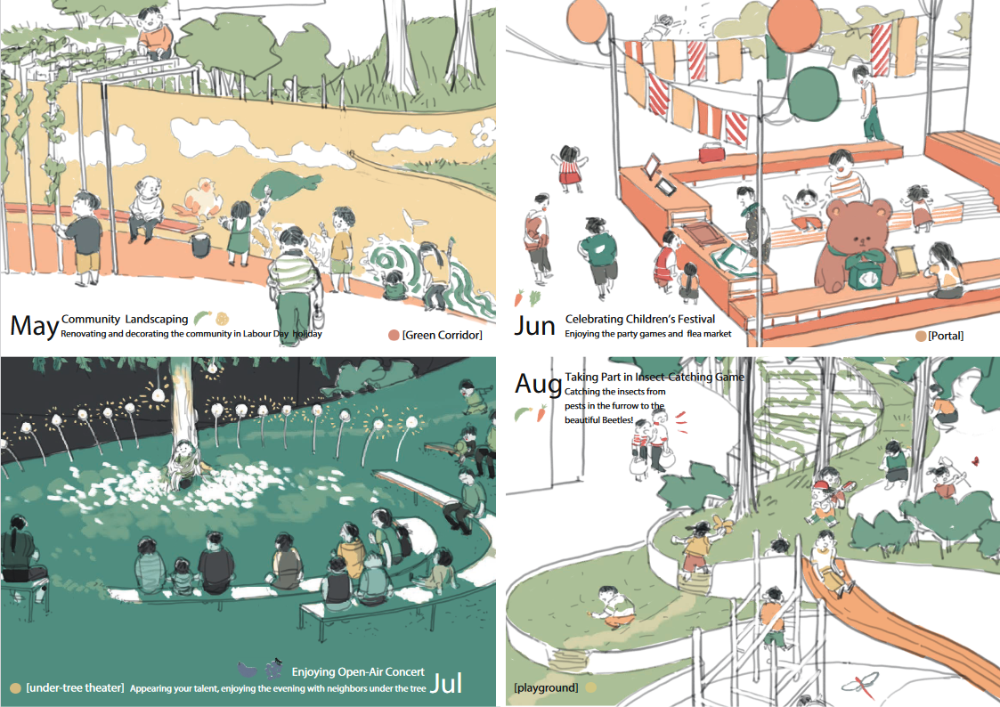
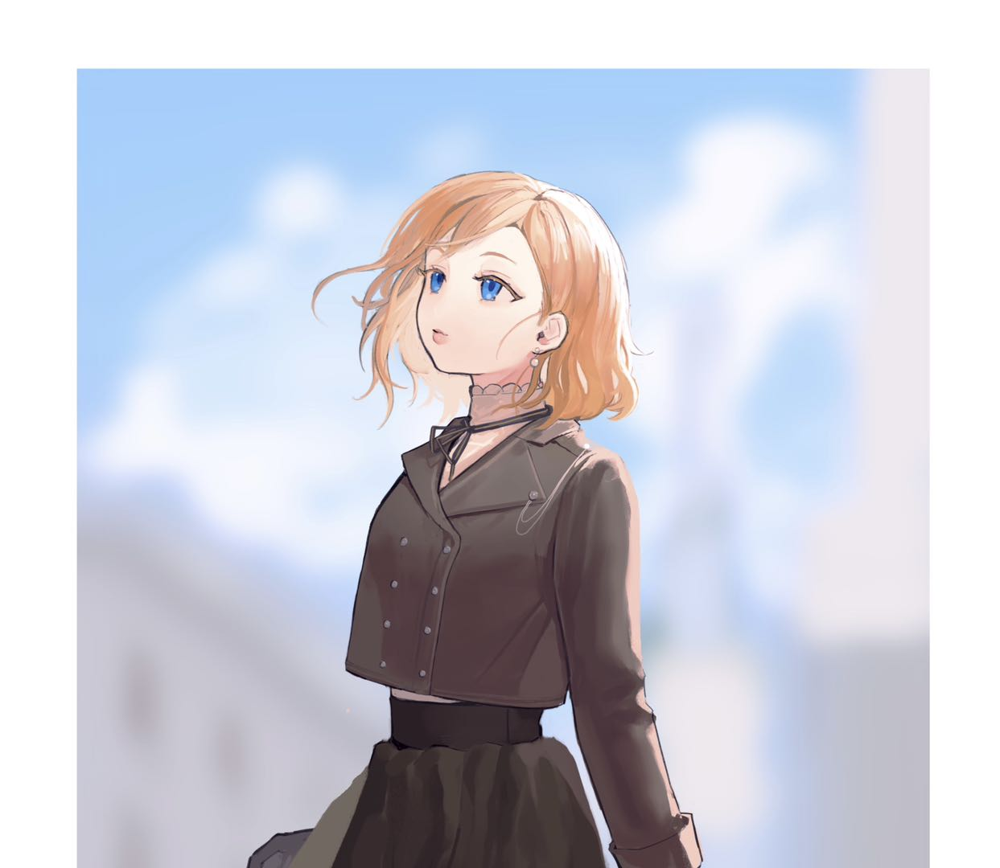

Categories

Graphic Design
Graphic and Children's Books Illustration Styles
Anime Art Style
For the original characters, commissions and fan-art

Portrait
For both fan-arts and commissions
Graphic and Children's Books Illustration Styles
These works were mostly used in spatial-design works, and other printouts.





Anime art style
Basically most of the commissions were in this style. You can find a little bit difference between each illustration, since each of them shows a different style.
Of course, sometimes I'd love to draw something what I want to draw as well.
Portrait
These works were drawn based on real persons or photos, such as movies' characters or artists.
Respect for the subject's right of publicity, and no commercial activities will be conducted.